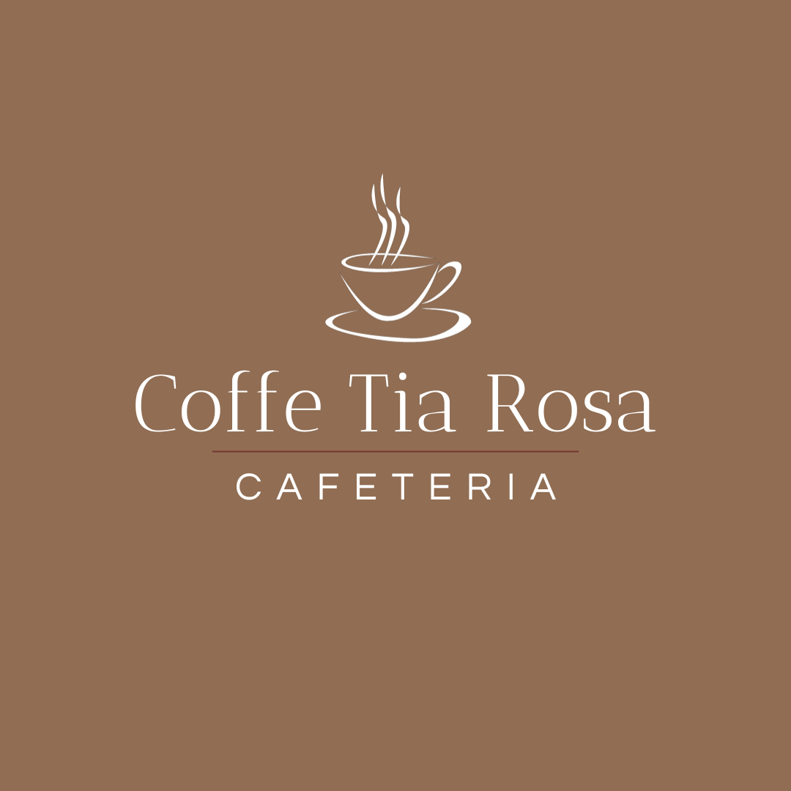

Sobre nós
O Coffe Shop Tia Rosa é um pitoresco café situado no coração de uma pequena cidade chamada Villa Alegre. Este café é conhecido por sua atmosfera acolhedora e amigável, onde os moradores locais se reúnem para desfrutar de deliciosas bebidas e conversas animadas.
Tia Rosa, a proprietária do café, é uma mulher simpática e acolhedora que sempre recebe os clientes com um sorriso caloroso. Ela é famosa por suas receitas caseiras de bolos e tortas que são preparados com amor e ingredientes frescos. O aroma de café moído na hora enche o ar, e os clientes podem escolher entre uma variedade de cafés especiais, desde lattes com arte latte impressionante até café expresso forte.
